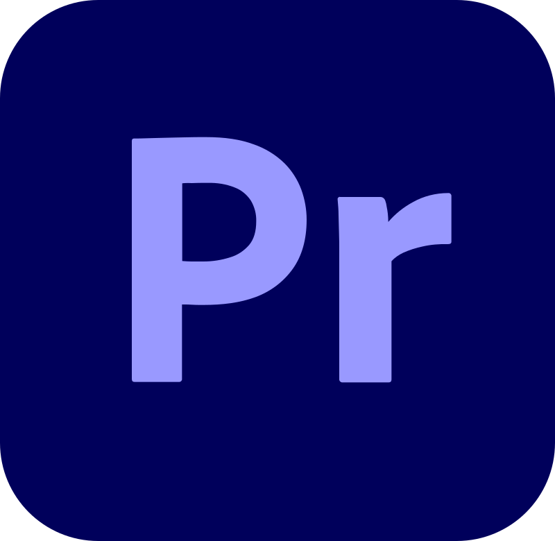
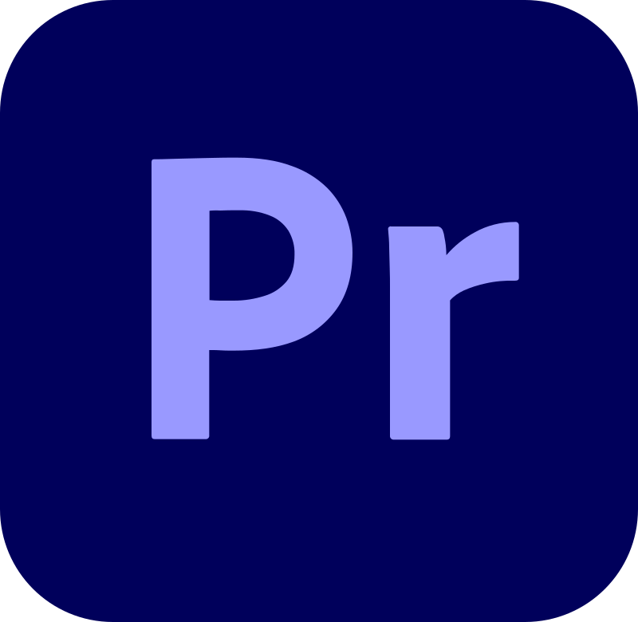

Video del Proyecto
×

 

Este proyecto consistió en la creación de un video promocional para un producto cosmético de belleza, considerando los parámetros establecidos por el cliente. Además, se tuvo en cuenta el perfil del cliente ideal para este proyecto, analizando diversos factores y características para asegurar que el contenido estuviera alineado con sus necesidades y expectativas.
Se creó un producto destacando luces y detalles realistas, aprovechando la iluminación para resaltar las superficies del cosmético. El objetivo fue generar una representación visual que capturara la elegancia y calidad premium del producto, utilizando efectos de iluminación que realzaran sus características para futuros promocionales.
Se utilizaron luces estratégicas para resaltar el producto, con el movimiento de la cámara destacando los puntos más importantes y el modelado hiperrealista. El foco estuvo en crear un render en el que los pequeños detalles de iluminación y los aspectos reflectivos del producto fueran lo más destacado, logrando una representación visual precisa y envolvente.
En la fase de postproducción, se combinó todas las secuencias y renders, ajustando los tiempos, la secuencia y los detalles generales del video. Se incorporaron los textos faltantes dentro del video, ajustando color, secuencia y estilo. Además, se añadió una pista musical que complementa la estética del video, alineada con la identidad de la marca, y se realizaron ajustes para garantizar una sincronización adecuada con el ritmo del video.